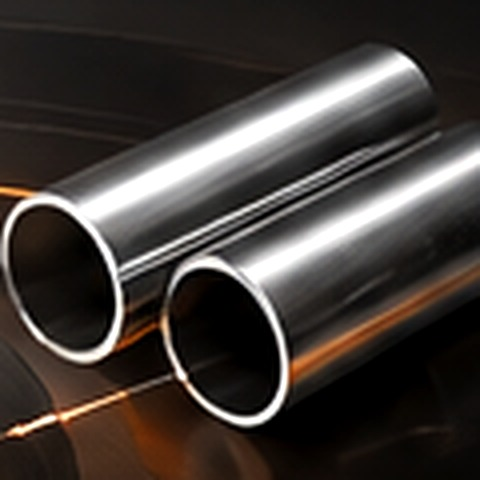
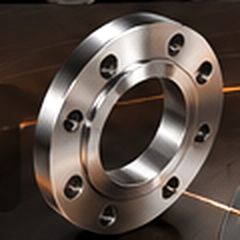
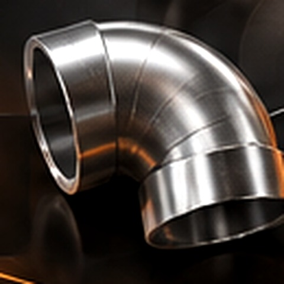
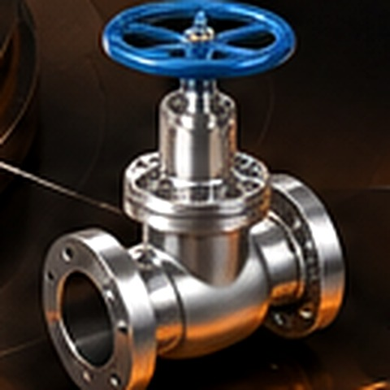
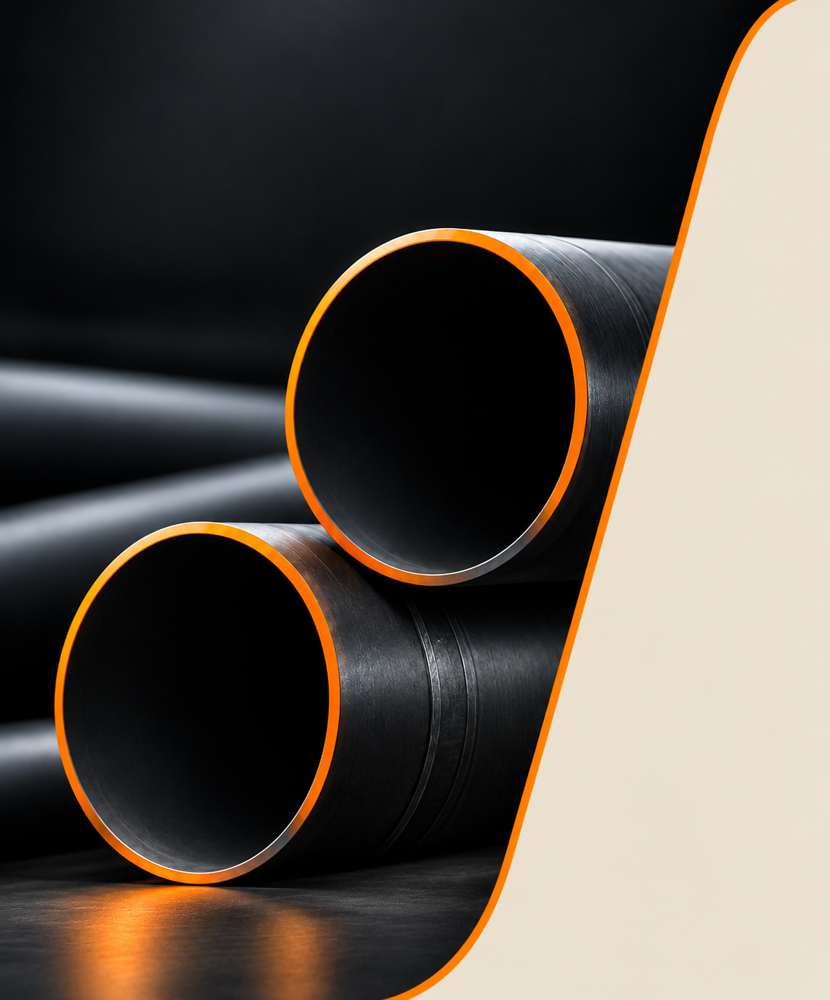

لولههای فولادی
لولههای بدون درز و درزدار برای خطوط انتقال و کاربردهای صنعتی.
مشخصات و استعلام ↙تأمین تخصصی لولههای فولادی، اتصالات و تجهیزات خطوط انتقال برای پروژههای انرژی، نفت و گاز، پتروشیمی و صنایع سنگین؛ با تمرکز بر مشخصات فنی، کیفیت و پاسخگویی حرفهای.
چهار گروه اصلی محصولات پایپاکس را در یک نمای تعاملی ببینید. برای مشاهده جزئیات و ثبت درخواست، هر محصول را انتخاب کنید.
مشاهده کاتالوگ محصولات ←
لولههای فولادی
فلنج و متعلقات
اتصالات صنعتی
شیرآلات صنعتیبرای انتخاب درست، فقط نام محصول کافی نیست. جنس، گرید، ابعاد، ضخامت، فشار و استاندارد باید با شرایط واقعی پروژه همخوانی داشته باشند.
لولههای بدون درز و درزدار برای خطوط انتقال و کاربردهای صنعتی.
مشخصات و استعلام ↙زانویی، سهراهی، تبدیل و اتصالات موردنیاز خطوط لوله.
مشخصات و استعلام ↙فلنجها و اقلام اتصال با توجه به کلاس، متریال و استاندارد درخواستی.
مشخصات و استعلام ↙تأمین تجهیزات کنترلی و اقلام تکمیلی خطوط انتقال.
مشخصات و استعلام ↙
در پروژههای صنعتی، انتخاب نادرست متریال یا مغایرت مشخصات میتواند هزینه و زمان اجرا را افزایش دهد. رویکرد پایپاکس بر دریافت نیاز فنی، بررسی مشخصات و پیگیری تأمین متناسب با کاربرد پروژه متمرکز است.
راهکارهای لوله و اتصالات با توجه به شرایط کاری هر صنعت انتخاب میشوند. گروههای زیر نمونههایی از بازارهای هدف این سبد تأمین هستند.
خطوط انتقال، تجهیزات جانبی و اقلام موردنیاز تأسیسات انرژی.
تأمین اقلام خطوط فرایندی با توجه به فشار، دما و سازگاری متریال.
شبکههای انتقال، تأسیسات صنعتی و پروژههای عمرانی بزرگ.
فرآیند شفاف کمک میکند نیاز پروژه از ابتدا درست تعریف شود و استعلام قابل بررسی باشد.
ارسال گروه کالا و اطلاعات اولیه پروژه.
بررسی مشخصات، استاندارد و شرایط سرویس.
پیگیری موجودی، زمان و پیشنهاد تأمین.
هماهنگی مراحل بعدی بر اساس توافق طرفین.
برای دریافت پیشنهاد دقیق، تا حد امکان استاندارد مرجع، متریال یا گرید، قطر اسمی، ضخامت یا رده، نوع اتصال، مقدار و محل تحویل را مشخص کنید. اگر دیتاشیت یا لیست متریال دارید، آن را در درخواست خود ذکر کنید.
ارسال درخواست فنی ←بخش محتوایی برای انتشار خبرهای تأمین، راهنماهای انتخاب محصول، استانداردها و تجربه پروژهها.
چکلیستی از مشخصات پایه برای تعریف دقیق نیاز پروژه.
چرا انتخاب کلاس باید با شرایط طراحی هماهنگ باشد.
مروری بر انتخاب زانویی، سهراهی و تبدیل.
نیاز فنی و اقلام موردنظر را ارسال کنید تا درخواست شما بررسی شود.